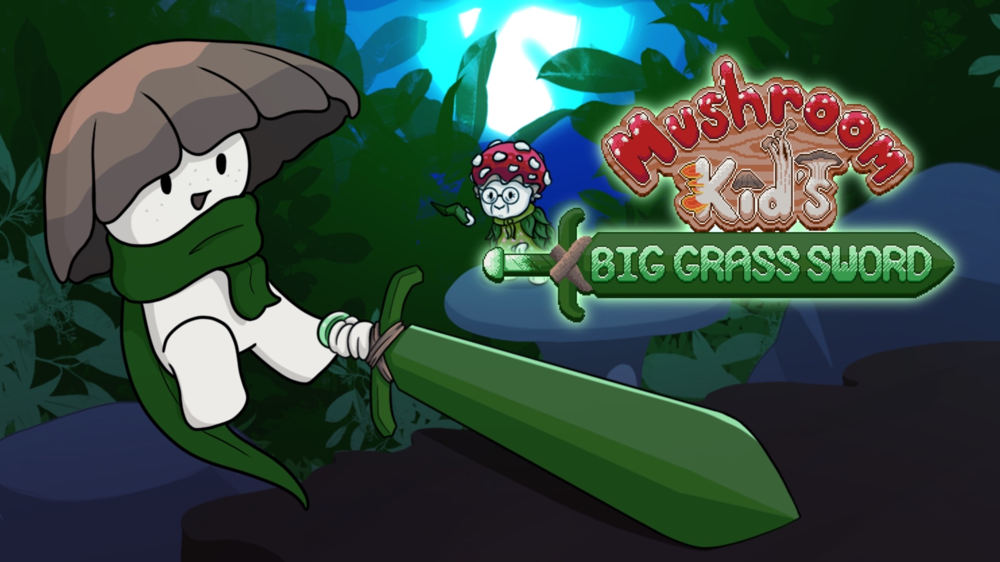
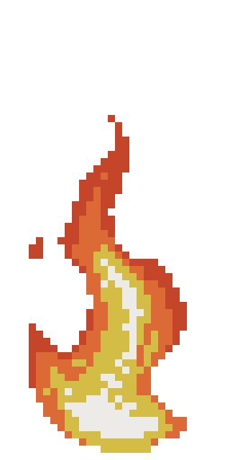
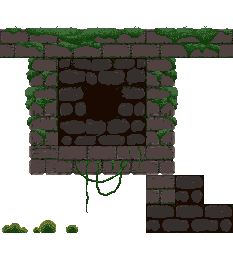
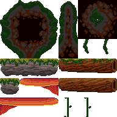
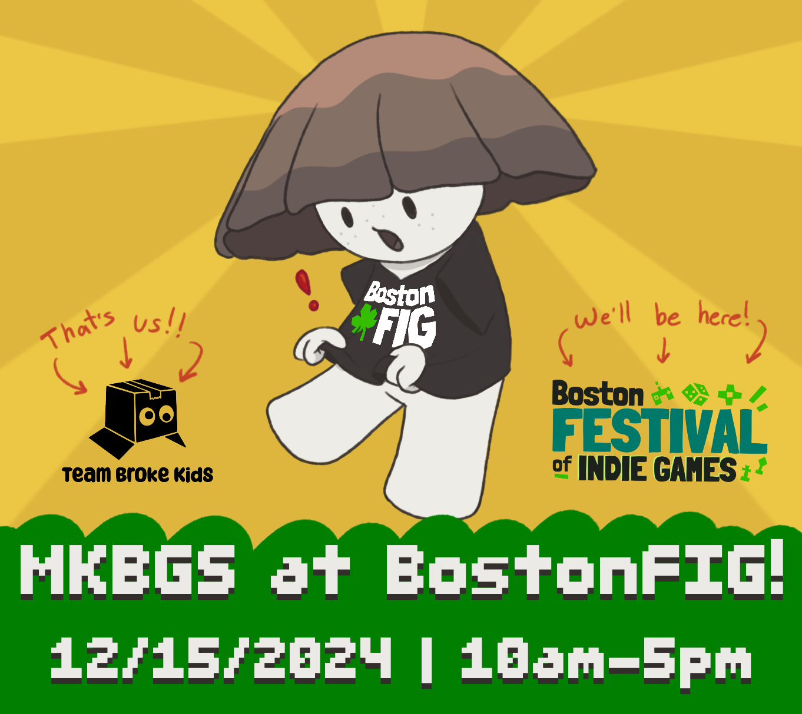
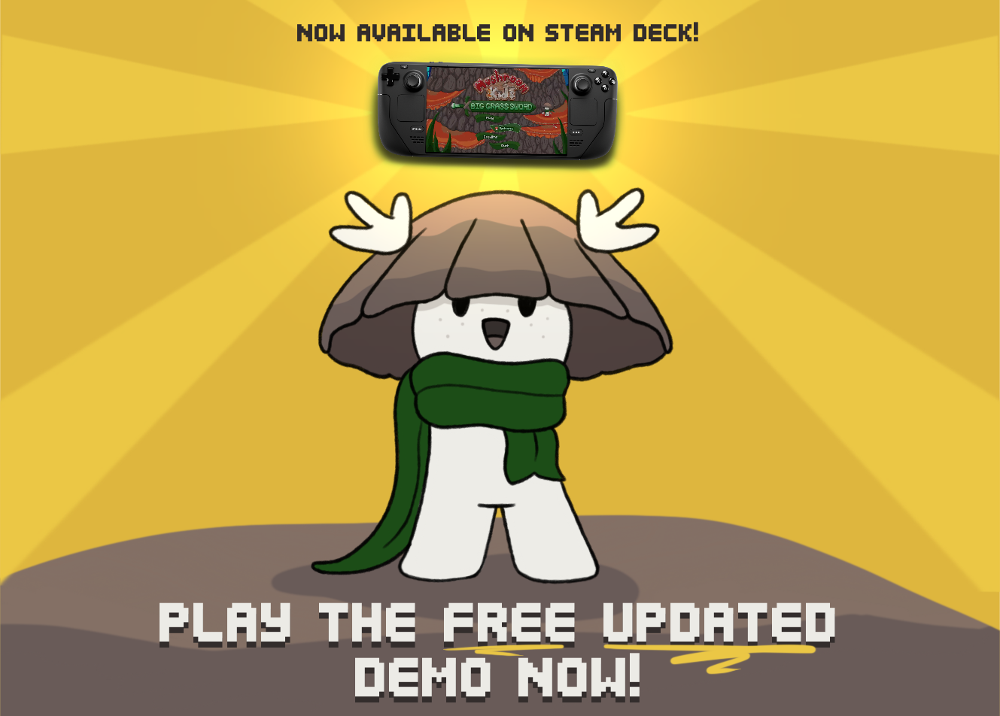

<html lang="en">
  <head>
    <title>Portfolio</title>
    <link rel="stylesheet" href="styles.css" />
    <link
      rel="icon"
      type="image/png"
      href="images/favicon-32x32.png"
      sizes="32x32"
    />
    <link rel="icon" type="image/png" href="favicon-16x16.png" sizes="16x16" />
  </head>
</html>

<body>
  <div id="nav-container">
    <div id="navbar">
      <a class="button" href="/index.html">Home</a>
      <a class="button" href="/index.html#projects">Projects</a>
      <a class="button" href="/about.html#resume">Resume</a>
      <a class="button" href="/index.html#contact">Contact</a>
    </div>
  </div>

  <div id="img-hero">
    
    <h1>Mushroom Kid's Big Grass Sword &#9733;</h1>
  </div>

  <section id="project-description">
    <div class="item">
      <div id="item-image">
        
      </div>
      <div id="item-info">
        <h2>
          Full production: September 2023 -> PRESENT <br />
          Game Jam: November 2022
        </h2>

        <a
          href="https://store.steampowered.com/app/2734360/Mushroom_Kids_Big_Grass_Sword/"
          ></a>
        <a href="https://fumpledump.itch.io/mushroom-kids-big-grass-sword"
          ></a>
        <h1>About the Game</h1>
        <p>
          <i>Mushroom Kid's Big Grass Sword</i> is a physics-based precision
          platformer that follows Mica, a little mushroom, on a journey to save
          their village from a giant bird with a sword that grows! Wield the
          Blade of Grass and use it to pull yourself over ledges and obstacles
          as it slowly becomes longer and more unwieldy. Combining this with
          Mica's jumping and gliding abilities creates a platforming experience
          like no other!
        </p>
        <ul>
          <li><b>Team size:</b> Currently 5</li>
          <li><b>Engine:</b> Godot</li>
          <li><b>Language:</b> GDScript</li>
        </ul>
      </div>
    </div>
    <div class="project-details">
      <iframe
        width="560"
        height="315"
        src="https://www.youtube.com/embed/wZlDTVqmZSc?si=T0T7d47mIAWWZMq0"
        title="YouTube video player"
        frameborder="0"
        allow="accelerometer; autoplay; clipboard-write; encrypted-media; gyroscope; picture-in-picture; web-share"
        referrerpolicy="strict-origin-when-cross-origin"
        allowfullscreen
      ></iframe>
      <h1>Origin</h1>
      <p>
        <i>Mushroom Kid's Big Grass Sword</i> started out as a game jam game
        called
        <i
          ><a href="https://fumpledump.itch.io/sword-of-the-morel"
            >Sword of the Morel</a
          ></i
        >
        for the 2022 Game/Music Jam, but after winning <i>Best Visuals</i> and
        <i>Best Soundtrack,</i>, the team decided to revamp the game a year
        later and bring it to a full release. Now, we have an award winning
        Steam demo, and have acquired over $26,000 in combined funding for the
        game. This includes our successful
        <a
          href="https://www.kickstarter.com/projects/teambrokekids/mushroom-kids-big-grass-sword"
          >Kickstarter</a
        >
        campaign, award money, and other grants put toward bringing this game to
        completion.
      </p>

      <h1>Awards</h1>
      <ul>
        <li><i>Best Student Game</i> award at BostonFIG 2024</li>
        <li><i>Grand Prize</i> award at RPI GameFest 2024</li>
        <li><i>Best Aesthetics</i> award at RIT EDGE 2024</li>
        <li><i>2024 Selection</i> for GDOC Expo 2024</li>
        <li>
          <i>Best Visuals</i> and <i>Best Soundtrack</i> awards in the 2022
          Game/Music Jam
        </li>
      </ul>

      <h1>My Contributions</h1>
      <p>
        As the art lead, I work with the art team to make sure all of the game
        art is planned out, cohesive, and fits the unique style of the game. I'm
        also the animator, UI artist, and character artist/designer, so I
        created all of the animated assets in the game, designed the characters,
        and created assets for the game's UI. I also handle in-engine art
        implementation; UI, UX, and marketing art; as well as help out with
        general level design, narrative design, and pacing.
      </p>

      <h2>Art</h2>
      <p>
        The art in <i>MKBGS</i> is pixel art at a fairly big scale (our tiles
        are 32x32), so a lot of our assets are very large and have room for
        detail. However, for the sake of the art style, I do put an emphasis on
        keeping things fairly rounded and simple, especially since the game's
        style is very lighthearted and squishy. <br />

        As of right now, the art team consists of two people: me and our
        environmental artist. Because of this, I make a handful of things like
        tilesets and decorative assets as well.
        <br /><br />
        Here are some examples of my character animations in the game:
      </p>

      <div class="gallery">
        
        
        
        
        
        
        
        
      </div>
      <p>Some mechanics and decor:</p>
      <div class="gallery">
        
        
        
        
      </div>
      <p>Environmental tiles and pieces:</p>
      <div class="gallery">
        
        
        
      </div>

      <p>Some UI:</p>

      <div class="gallery">
        
        
      </div>

      <p>And that big money shot!</p>
      <div class="gallery">
        
      </div>
      <h2>Design</h2>
      <p>
        In the design department, I've worked on napkin sketches, refining those
        sketches into more cohesive gameplay beats, and implementing them into
        the initial graybox of the levels. I also have experience working with
        implementing narrative beats with a plugin for Godot 4 called Dialogic.
        <br /><br />
        After the inital graybox is complete, I'm also tasked with going back in
        to make sure the pacing feels good. If not, I add or remove traversal
        between points of interest, and find good places for narrative character
        moments!
      </p>

      <h2>Marketing</h2>
      <p>
        When it comes to marketing our game, I'm in charge of creating a lot of
        the graphics for it. Here are some examples of images I've made for our
        social media accounts:
      </p>
      <div class="gallery">
        
        
        
        
      </div>
    </div>
  </section>
  <footer>Copyright © 2025 by Amanda Rowe</footer>
</body>
